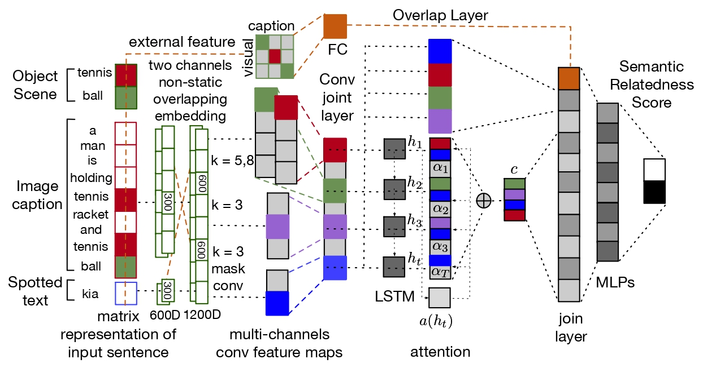

Semantic Relatedness Based Re-ranker for Text Spotting |
| Ahmed Sabir, Francesc Moreno-Noguer, Lluís Padró |

|
|
|
|
Applications such as textual entailment, plagiarism detection or document clustering rely on the notion of semantic similarity, and are usually approached with dimension reduction techniques like LDA or with embedding-based neural approaches. We present a scenario where semantic similarity is not enough, and we devise a neural approach to learn semantic relatedness. The scenario is text spotting in the wild, where a text in an image (e.g., street sign, advertisement or bus destination) must be identified and recognized. Our goal is to improve the performance of vision systems by leveraging semantic information. Our rationale is that the text to be spotted is often related to the image context in which it appears (word pairs such as Delta–airplane, or quarters–parking are not similar, but are clearly related). We show how learning a word-to-word or word-to-sentence relatedness score can improve the performance of text spotting systems up to 2.9 points, outperforming other measures in a benchmark dataset.
Contact: Ahmed Sabir